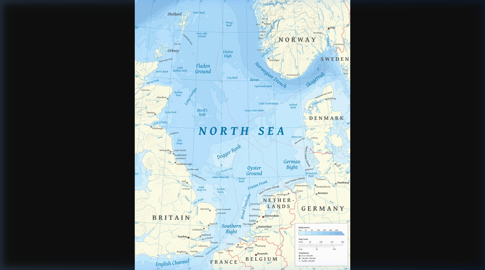

Printable Workbook
The Great War: Causes & Outbreak

Key Topic 1: The birth of the state of Israel, 1945–1963
Cover Image: The SS Exodus carrying Jewish refugees, intercepted by the British Royal Navy in 1947. (Source: Wikipedia/Public Domain)
Unit Overview
| Key Enquiry Focus |
Hinge Questions (Self-Assessment) |
| KT1.1: The Franco-Prussian War |
- If you were a French citizen in 1871, which of the three penalties (losing land, paying 5 billion francs, or hosting an enemy army) would make you the most angry, and why?
- Bismarck didn't actually lie in the Ems Telegram; he just deleted parts of it to change the tone. Why is editing the truth sometimes more dangerous than a flat-out lie?
- Bismarck created alliances to keep Germany safe, but how did these secret treaties actually make a future European war much more dangerous?
|
| KT1.2: Imperial Rivalries |
- If you were the British Prime Minister looking at a map, why would Germany suddenly claiming colonies in Africa make you incredibly nervous about your own empire?
- Germany claimed they had a 'legitimate right to historical greatness.' Why did Britain see this exact same ambition as an aggressive threat?
- Kaiser Wilhelm gambled that Britain wouldn't risk war to help France in Morocco. Why did his gamble actually make the alliance against Germany much stronger?
|
| KT1.3: The Naval Arms Race |
- The HMS Dreadnought was a triumph of British engineering, but why did launching it actually help Germany in the short term?
- If you were a German citizen listening to Admiral Tirpitz, why might you feel it was perfectly fair and justified for Germany to build a massive navy?
- How does a massive arms race make war more likely, even if neither country originally planned to actually attack the other?
|
Name:
Class:
KT1.1: The Franco-Prussian War
Enquiry: How did the Franco-Prussian War sow the seeds of long-term European conflict?
By the end of this lesson, I can:
Identify the penalties forced upon France in 1871.
Explain how the Ems Telegram sparked the Franco-Prussian War.
Evaluate the long-term impact on European relations.
Q1. What are the two opposing figures doing in this 1871 painting by Anton von Werner, and why is this event significant?
Source A: Anton von Werner, 'The Proclamation of the German Empire at Versailles', painted in 1885.

What is this source showing? This painting depicts the official birth of the unified German Empire inside the Hall of Mirrors at the Palace of Versailles in 1871. France was defeated and forced to host this ceremony in its own royal palace. This created a deep, lasting feeling of humiliation and anger in France, leading to a desire for revenge (revanche) that would eventually help spark WWI.
Chronological Domino Flowchart
Task: The historical events below are out of order. Read them carefully, then use your pen to draw arrows connecting the boxes in the correct chronological and causal order (Event A ➔ Event B ➔ Event C...).
1871
The Unification of Germany
The Franco-Prussian War
1907
Encirclement & Alliances
The Triple Entente System
June 1914
The Spark in Sarajevo
The Assassination of the Archduke
1906
The Naval Arms Race
The Launch of HMS Dreadnought
1897
Imperial Rivalries
The Place in the Sun speech
1. Looking at this long-term timeline, which factor do you think was the most dangerous necessary cause of the war?
There was no country called Germany until 1871. Instead, central Europe was a fragmented collection of independent small states loosely joined only by language and local customs. The most powerful, heavily militaristic state among them was the northern kingdom of Prussia. Desiring to unite these states, Prussia's brilliant, ruthless Chancellor Otto von Bismarck first grouped the northern states into the North German Confederation. To complete his dream of a single, mighty empire, Bismarck desperately needed the independent southern German states to unite with the north. He realized that nothing would unite these separate states faster than a shared national enemy.
Q2. To what extent did the maps of central Europe fundamentally change between 1862 and 1871? Use the term "North German Confederation" in your answer.
Bismarck's opportunity arrived in July 1870, when King Wilhelm sent him a holiday dispatch describing a friendly meeting with the French ambassador. Bismarck carefully edited and shortened the text of this message—now famously known as the Ems Telegram—before releasing it to the international press. The edited text read as though the Prussian King had explicitly insulted the French government. Horrified at this public blow to their national pride, France predictably declared war on 19 July 1870. Bismarck’s trap worked flawlessly: the independent southern German states immediately united behind Prussia.
Q3. Describe the diplomatic trick Chancellor Otto von Bismarck used to manufacture a war with France in 1870.
Prussia's military strategy relied on two distinct advantages. First, they utilized an advanced railway network to mobilise and deploy 500,000 highly trained troops with astonishing speed. Second, they equipped their forces with Krupp steel artillery, which fired much faster and further than French guns. The smaller French force of 180,000 was completely caught off guard. During the terrible Siege of Metz, the best French troops were entirely surrounded. When the remaining French forces attempted to break the lines at the Battle of Sedan on 1 September, they suffered 17,000 casualties and over 21,000 soldiers were captured—including the French Emperor Napoleon III. Following a brutal four-month winter siege of Paris, the capital surrendered on 28 January 1871.
Q4. Identify two distinct military advantages that allowed the Prussian-led German army to quickly defeat the conventional French forces.
The war permanently transformed the balance of power. In a final, agonizing humiliation for France, the German Empire was officially proclaimed inside the Hall of Mirrors at the Palace of Versailles—the historic home of French royalty. The peace treaty forced three severe penalties upon France: it ceded the strategic industrial border provinces of Alsace-Lorraine, was forced to pay a crushing war fine of 5 billion francs over five years, and was forced to host a German occupation army. This deep humiliation shattered French national pride and planted a bitter seed of resentment. Fearing eventual French revenge, German Field Marshal Alfred von Schlieffen began drawing up a military master plan in 1897 to quickly knock out France first if Germany ever faced a simultaneous war with Russia.
Q5. List the three severe penalties forced upon France by the victorious German Empire in the 1871 peace treaty.
Following the crushing defeat of France in 1871, German Chancellor Otto von Bismarck understood that France would never forgive the loss of Alsace-Lorraine. His greatest fear was that France would form an alliance with another major European power—specifically Russia—which would force Germany to fight a devastating "two-front war" if conflict ever broke out.
Q6. Explain why the loss of Alsace-Lorraine and the ceremony at Versailles created a long-term "nightmare" for European peace.
To prevent this, Bismarck spent the next twenty years weaving a complex, dizzying web of alliances and secret treaties designed entirely to keep France diplomatically isolated. He formed the Triple Alliance with Austria-Hungary and Italy, and signed a secret Reinsurance Treaty with Russia. Bismarck's diplomatic genius lay in his ability to juggle these competing empires, ensuring that Germany always had more friends than enemies.
However, when a young, ambitious Kaiser Wilhelm II took the throne in 1888, he dismissed Bismarck and foolishly allowed the treaty with Russia to expire. Within years, Bismarck's nightmare became a reality: France and Russia signed a military alliance. The brilliant diplomatic safety net that Bismarck had built was gone, leaving Germany surrounded and forcing the German military to start planning for the exact scenario Bismarck had dreaded.
Reference Map: Alsace-Lorraine Border Region (1871)

Simplified map showing Alsace-Lorraine on the border between France and the new German Empire.
Bismarck vs. Wilhelm: A Clash of Strategy
Following the crushing defeat of France in 1871, German Chancellor Otto von Bismarck understood that France would never forgive the loss of Alsace-Lorraine. His greatest fear was that France would form an alliance with another major European power"specifically Russia"which would force Germany to fight a devastating "two-front war" if conflict ever broke out.
To prevent this, Bismarck spent the next twenty years weaving a complex, dizzying web of alliances and secret treaties designed entirely to keep France diplomatically isolated. He formed the Triple Alliance with Austria-Hungary and Italy, and signed a secret Reinsurance Treaty with Russia. Bismarck's diplomatic genius lay in his ability to juggle these competing empires, ensuring that Germany always had more friends than enemies.
However, when a young, ambitious Kaiser Wilhelm II took the throne in 1888, he dismissed Bismarck and foolishly allowed the treaty with Russia to expire. Within years, Bismarck's nightmare became a reality: France and Russia signed a military alliance. The brilliant diplomatic safety net that Bismarck had built was gone, leaving Germany surrounded and forcing the German military to start planning for the exact scenario Bismarck had dreaded.
Q7. Evaluate how the change in leadership from Bismarck to Kaiser Wilhelm II fundamentally altered Germany's strategic position in Europe.
Historian's Corner: The 'Master Planner' Debate
Historians debate whether Bismarck was a genius 'master planner' who plotted the Franco-Prussian War years in advance, or merely a brilliant opportunist who reacted to events (like the Ems Telegram) as they happened. A.J.P. Taylor famously argued Bismarck just rode the wave of events.
Revision Timeline
Lesson 1: The Franco-Prussian War
Map out the key events chronologically. Read the title and prompt to guide your summary.
Jewish Insurgency
Why did Jewish paramilitary groups target British forces?
King David Hotel Bombing
What was the impact of this attack on British morale?
The Exodus Incident
How did this event sway international opinion?
UN Partition Plan (Res 181)
What was the UN's proposed solution?
Declaration of the State of Israel
Who declared it and what was the immediate reaction?
KT1.2: Imperial Rivalries
Enquiry: Why did the scramble for African colonies heighten tensions between European powers?
By the end of this lesson, I can:
Identify the main European colonial powers and their territories.
Explain how Kaiser Wilhelm II's 'Place in the Sun' policy threatened Britain.
Evaluate the impact of the Moroccan Crises on the Entente Cordiale.
Q1. Look closely at the man standing over Africa. What is his posture suggesting about imperial ambitions?
Source A: John Tenniel, 'The Greedy Boy', a British political cartoon published in Punch Magazine, 1885.

What is this source showing? This British cartoon satirizes Germany's Chancellor Otto von Bismarck as a "greedy boy" grabbing slices of a pudding that represents colonial territories in Africa and New Guinea. This reflects British anxiety and suspicion about Germany's aggressive efforts to build a global empire, which threatened Britain's status as the world's leading power.
Do Now Activity
1. Who was the first Emperor of the newly unified Germany in 1871?
2. Which brilliant Chancellor united the German states?
3. Which country was humiliatingly defeated in the Franco-Prussian War?
4. What strategic border territory did Germany take in 1871?
5. What is the French word for their desire for revenge?
6. Explain how Bismarck used the Ems Telegram to trap France into a war.
7. Detail the two military advantages the Prussian army possessed.
8. PAST TOPIC: Why was the location of the German Empire's proclamation so humiliating for France?
9. PAST TOPIC: Why did Bismarck weave a complex web of secret alliances after 1871?
10. PAST TOPIC: What was Bismarck's ultimate nightmare scenario?
By the turn of the 20th century, the Great Powers of Europe were locked in a fierce, competitive race to conquer and maintain overseas empires. Colonies had become vital status symbols of industrial wealth and global importance. Each territory provided cheap raw materials to feed the factories of the ruling nation, while simultaneously serving as locked-down markets to purchase the home country's manufactured goods. This race had been formalized at the 1884 Berlin Conference, where European leaders partitioned Africa among themselves without consulting any Africans. Among the territories partitioned, the Congo Free State stood out as a site of extreme exploitation, owned personally by King Leopold II of Belgium.
Q2. Explain two distinct economic reasons why possessing overseas colonies was vital to the industrial growth of a Great Power.
Great Britain possessed the vastest overseas empire in human history. Because Great Britain was an island nation, its entire imperial network relied heavily on open sea routes. Thousands of British merchant ships sailed the oceans daily, and the Royal Navy was given absolute priority to keep these global sea lanes clear of foreign rivals. Crucially, Britain controlled the Suez Canal in Egypt to secure its vital shipping lanes to India. Any challenge to this naval dominance was viewed by British politicians as a direct threat to the survival of the British Empire. France held the second-largest empire, focusing heavily on territories in North and West Africa. Having suffered the bitter humiliation of losing Alsace-Lorraine to Germany in 1871, French politicians fiercely guarded their colonies to protect their remaining international reputation. However, imperial expansion was fraught with danger; in 1898, Britain and France nearly went to war during the Fashoda Incident, a tense military standoff over control of the Upper Nile in Sudan.
Q3. Why did French politicians feel it was absolutely vital to maintain a firm hold on their remaining global colonies after 1871?
The entire geopolitical landscape destabilized when Germany entered the race. Having only unified in 1871, Germany was a new nation right in the middle of Europe, but its industry was growing rapidly. The ambitious German Kaiser Wilhelm II and his politicians wanted Germany to match the global influence of Britain and France. In a fiery speech to the German parliament on 6 December 1897, Foreign Secretary Bernhard von Bülow announced that Germany would no longer stand aside, famously demanding Germany’s own "place in the sun".
Germany rapidly seized territories across the globe, including the Cameroons, East Africa, Togo, and the Pacific colony of Kaiser-Wilhelmsland in Papua New Guinea. This aggressive push led to direct clashes. In 1911, the Agadir Crisis erupted when Germany sent a gunboat, the SMS Panther, to the Moroccan port of Agadir in an attempt to challenge French influence. The standoff ended when Germany recognized France as the protector of Morocco in exchange for minor territories in the Congo. To hold and defend this new empire, German politicians announced plans to construct a massive battle fleet. This move deeply alarmed Great Britain. British politicians regarded Germany’s colonial and naval ambitions as an aggressive attempt to undermine the British Empire, while German leaders increasingly viewed Britain as a hostile obstacle standing in the way of Germany’s legitimate right to historical greatness.
Q4. Explain how Germany’s sudden desire to build a naval fleet to protect its new colonies acted as a cause of friction with Great Britain.
Q5. What specific geographical territory did Foreign Secretary Bernhard von Bülow target when he demanded a "place in the sun" for Germany? (P3 & P4)
In 1904, Britain and France ended centuries of bitter rivalry by signing the Entente Cordiale, a friendly agreement to resolve colonial disputes. Kaiser Wilhelm II of Germany was furious; he believed this friendship was designed to encircle Germany. To test the strength of this new bond, the Kaiser decided to deliberately provoke a crisis in North Africa, assuming the British would not actually risk war to defend French interests.
In 1905, the Kaiser arrived in Tangier, Morocco, declaring his support for Moroccan independence against French influence. He expected the Entente Cordiale to fracture under pressure. Instead, the exact opposite happened: at the Algeciras Conference in 1906, Britain firmly backed France, leaving Germany diplomatically humiliated and isolated, supported only by Austria-Hungary.
The Kaiser repeated this dangerous gamble in 1911 (the Agadir Crisis) by sending the gunboat SMS Panther to the Moroccan coast. Once again, Britain stood by France, and the British navy was even placed on a war footing. Wilhelm’s clumsy attempts at 'gunboat diplomacy' completely backfired. Rather than breaking the Entente Cordiale, his aggression convinced Britain and France that Germany was an unpredictable threat, pushing the two nations into a much tighter military partnership.
Map A: Partition of Africa (1914)

Map B: The Global Imperial Lanes

The Gamble of Weltpolitik
In 1905, the Kaiser arrived in Tangier, Morocco, declaring his support for Moroccan independence against French influence. He expected the Entente Cordiale to fracture under pressure. Instead, the exact opposite happened: at the Algeciras Conference in 1906, Britain firmly backed France, leaving Germany diplomatically humiliated and isolated, supported only by Austria-Hungary.
The Kaiser repeated this dangerous gamble in 1911 (the Agadir Crisis) by sending the gunboat SMS Panther to the Moroccan coast. Once again, Britain stood by France, and the British navy was even placed on a war footing. Wilhelm’s clumsy attempts at 'gunboat diplomacy' completely backfired. Rather than breaking the Entente Cordiale, his aggression convinced Britain and France that Germany was an unpredictable threat, pushing the two nations into a much tighter military partnership.
Q6. Explain why Kaiser Wilhelm's strategy of testing the Entente Cordiale during the Moroccan Crises was a massive strategic failure for Germany.
Historian's Corner: The Primat der Innenpolitik
Some historians (like Eckart Kehr) argue that Wilhelm II's aggressive Weltpolitik was actually driven by domestic politics. By creating foreign enemies, the Kaiser hoped to distract the German working class from voting for socialist parties at home.
Revision Timeline
Lesson 2: Imperial Rivalries
Map out the key events chronologically. Read the title and prompt to guide your summary.
The Arab Invasion
Which nations attacked Israel immediately after its creation?
First Truce
How did Israel use the UN-brokered truce to its advantage?
Deir Yassin Massacre
What impact did this have on the Palestinian population?
The Palestinian Exodus (Nakba)
Why did 700,000 Palestinians become refugees?
1949 Armistice Agreements
What were the new borders established?
KT1.3: The Naval Arms Race
Enquiry: How did the Anglo-German naval arms race push Europe closer to war?
By the end of this lesson, I can:
Identify the significance of the HMS Dreadnought.
Explain the concept of the Two-Power Standard and Risk Theory.
Analyze how naval competition fed mutual suspicion.
Q1. This blueprint represents the HMS Dreadnought. Why would this ship make all other navies obsolete?
Source A: Official technical blueprint showing the design and armament of HMS Dreadnought, published in 1906.

What is this source showing? This is a technical naval diagram of HMS Dreadnought, a revolutionary British battleship launched in 1906. It was so fast and heavily armed that it instantly made all existing warships in the world obsolete (useless). This triggered a frantic naval arms race between Britain and Germany, as both countries rushed to build as many Dreadnoughts as possible.
Do Now Activity
1. What was the name of Kaiser Wilhelm II's aggressive foreign policy?
2. Explain how Wilhelm II's actions during the Moroccan Crises backfired on Germany.
3. Why was the Franco-Russian Alliance a strategic disaster for Germany?
4. Evaluate how the 'Scramble for Africa' increased tensions in Europe.
5. Describe the impact of Britain abandoning its policy of 'Splendid Isolation'.
6. Evaluate the role of Wilhelm II's personality in destabilizing Europe.
7. Who dismissed Otto von Bismarck in 1890?
8. PAST TOPIC: What strategic territory did Germany take from France in 1871?
9. PAST TOPIC: Why did Bismarck weave a complex web of secret alliances after 1871?
10. PAST TOPIC: What was Bismarck's ultimate nightmare scenario?
For nearly a century following the Battle of Trafalgar in 1805, Great Britain had ruled the world's oceans without any major international challenge, possessing the most powerful navy on earth. As an island nation with a massive global empire, Britain relied on its naval supremacy to protect its trade routes, secure resource lifelines, and defend its home shores from European threats. To maintain this supremacy, Britain adhered to the , a strict naval policy stating that the Royal Navy must always be at least equal to or larger than the next two most powerful navies in the world combined.
Q2. Describe the 'Two-Power Standard' and explain why Great Britain adhered to this strict naval policy.
Everything changed fundamentally in 1898 when Germany's new emperor, Kaiser Wilhelm II, announced his clear intention to build a powerful German navy. The Kaiser believed that if Germany was ever to become a true world power, it had to explicitly challenge the global dominance of the British fleet. In 1898 and 1900, the German government passed the historic German Navy Laws, which ordered the rapid construction of a massive fleet, including 19 battleships in the first law and an additional 38 in the second. To back this policy, the German naval chief, Admiral Tirpitz, established the Navy League. This massive organization arranged civilian tours of industrial shipyards and delivered public lectures across Germany to stimulate intense public interest and build a fierce sense of patriotism among ordinary citizens.
Q3. Detail what the German Navy Laws of 1898 and 1900 explicitly ordered the German industrial shipyards to construct.
Q4. Explain how Admiral Tirpitz used the Navy League to manufacture civilian support and patriotism for Germany's expanding fleet.
Q5. Explain why maintaining a massive navy was a matter of survival for Great Britain, but was viewed as a matter of status and power for Germany. (P1 & P2)
British politicians were profoundly alarmed by Germany's actions. They believed that Germany's expanding High Seas Fleet was being designed specifically for a future military conflict with the British Grand Fleet. To explain the danger, British politicians pointed out the fundamental difference in each nation's security needs.
Britain's defensive response was to design and construct the most powerful warship ever created: HMS Dreadnought. Launched in 1906, this vessel was so advanced in its speed, armor plating, and long-range rotating turrets that every existing battleship on earth was rendered instantly obsolete overnight. Rather than stopping the competition, HMS Dreadnought inadvertently reset the score to zero, giving Germany a chance to compete on equal terms. Germany immediately responded by manufacturing its own version of the battleship, the SMS Rheinland. The naval arms race was officially underway, with both nations building more and more of these massive, expensive weapons. By 1914, Germany had successfully doubled the size of its navy to become the second-largest naval power in the world, leaving Britain deeply suspicious of its motives.
Q6. Identify three specific technological features of HMS Dreadnought that made it superior to all previous warships.
This competitive race culminated in a highly strategic naval standoff. The British Grand Fleet was stationed at its primary home base at in Scotland, while the German High Seas Fleet was based at on the North Sea coast. Both fleets expected a massive, decisive battle in the . To facilitate the rapid movement of its massive new dreadnoughts between the Baltic Sea and the North Sea, Germany widened the , completing the project in 1914 just before the outbreak of war.
Before 1906, Britain ruled the waves with a policy known as the 'Two-Power Standard'—a rule stating the Royal Navy must be at least as large as the next two biggest navies combined. Germany, despite passing ambitious Naval Laws under Admiral von Tirpitz, was struggling to catch up. But in 1906, Britain launched a ship that accidentally leveled the playing field.
The HMS Dreadnought was a technological marvel. It was faster, heavily armored, and carried ten massive 12-inch guns, making every other battleship on earth instantly obsolete. While the Dreadnought was a triumph of British engineering, it contained a fatal strategic flaw: because all older ships were now worthless, Britain's massive head start in naval numbers was suddenly wiped out.
Germany recognized the opportunity immediately. The naval race was no longer about total ships, but about who could build the most 'Dreadnought-class' vessels. By revolutionizing naval warfare, Britain had essentially hit the reset button on the arms race, giving Germany a realistic chance to challenge British naval supremacy from scratch. The ensuing desperate scramble to build Dreadnoughts consumed the budgets and political rhetoric of both nations up until 1914.
Q7. Explain how the launching of HMS Dreadnought in 1906 represented an industrial turning point in the naval arms race, rather than maintaining the status quo. (P4 & P8)
MAP SUITE PLATE 4: The North Sea & Naval Chokepoints

The Naval Race: A Self-Fulfilling Prophecy?
The HMS Dreadnought was a technological marvel. It was faster, heavily armored, and carried ten massive 12-inch guns, making every other battleship on earth instantly obsolete. While the Dreadnought was a triumph of British engineering, it contained a fatal strategic flaw: because all older ships were now worthless, Britain's massive head start in naval numbers was suddenly wiped out.
Germany recognized the opportunity immediately. The naval race was no longer about total ships, but about who could build the most 'Dreadnought-class' vessels. By revolutionizing naval warfare, Britain had essentially hit the reset button on the arms race, giving Germany a realistic chance to challenge British naval supremacy from scratch. The ensuing desperate scramble to build Dreadnoughts consumed the budgets and political rhetoric of both nations up until 1914.
Q8. How did the invention of the HMS Dreadnought ironically endanger British naval supremacy despite being a British invention?
Historian's Corner: The Anglo-German Antagonism
Paul Kennedy argues that the naval arms race was the single most decisive factor in turning Britain from a neutral observer into Germany's enemy, as the threat of a German navy fundamentally challenged Britain's core survival strategy.
Revision Timeline
Lesson 3: The Naval Arms Race
Map out the key events chronologically. Read the title and prompt to guide your summary.
The Baghdad Pact
Why did this Western alliance anger Nasser?
Czech Arms Deal
How did this shift the balance of power in the region?
Nationalisation of the Suez Canal
Why did Nasser take control of the canal?
The Suez Crisis
Who colluded to attack Egypt, and what was the outcome?
Formation of the PLO
What was the goal of the Palestine Liberation Organisation?
End of Unit Quiz Pack
Instructions: Answer the 50 quick-fire recall questions below. If you get stuck, the scrambled answers are provided in the Answer Bank on the final page.
1. In what year did the Franco-Prussian War end?
2. Which wealthy region did Germany take from France in 1871?
3. What was the French desire for revenge called?
4. Who was the German Chancellor that unified Germany?
5. What was Bismarck's greatest strategic fear?
6. Which two countries did Bismarck fear would ally against Germany?
7. What was the secret 1887 agreement between Germany and Russia?
8. Which ambitious German Emperor dismissed Bismarck in 1890?
9. What was Wilhelm II's aggressive global policy called?
10. What previous policy of Bismarck's focused on European peace?
11. What agreement did Britain and France sign in 1904?
12. In which African country did Wilhelm provoke crises in 1905 and 1911?
13. What was the result of the First Moroccan (Tangier) Crisis?
14. What name was given to Germany's aggressive threat of military force?
15. What was the name of the German gunboat sent to Agadir in 1911?
16. What was the British policy requiring their navy to be larger than the next two combined?
17. What revolutionary British battleship was launched in 1906?
18. Why did the Dreadnought ironically threaten British supremacy?
19. What was Britain's traditional foreign policy of avoiding European alliances called?
20. What was German Admiral Tirpitz's naval strategy called?
21. What volatile region was known as the 'Powder Keg of Europe'?
22. What declining multi-ethnic empire dominated the northern Balkans?
23. Which empire was retreating from the Balkans, leaving a power vacuum?
24. Which nation wanted to unite all South Slavs into a 'Greater' nation?
25. Which region did Austria-Hungary formally annex in 1908?
26. Which major power considered itself the protector of the Slavic people?
27. Who was the heir to the Austro-Hungarian throne?
28. In which city was the Archduke assassinated?
29. On what date was the Archduke assassinated?
30. Who assassinated the Archduke?
31. What secret Serbian society did the assassin belong to?
32. What unconditional promise did Germany give Austria-Hungary in July 1914?
33. What is the month of diplomatic failures after the assassination called?
34. What did Austria-Hungary issue to Serbia on July 23?
35. Which country began mobilizing its army to protect Serbia?
36. What was the name of Germany's military strategy for a two-front war?
37. Which neutral country did Germany invade to attack France?
38. Which country declared war on Germany due to the invasion of Belgium?
39. What was the alliance of Germany, Austria-Hungary, and Italy called?
40. What was the alliance of Britain, France, and Russia called?
41. What treaty ended the First World War in 1919?
42. Which clause forced Germany to accept full responsibility for the war?
43. What is the term for a war launched to destroy a rising threat before it gets too strong?
44. Which historian famously argued Germany planned a war of aggression?
45. Which historian argued the nations blundered into war due to rigid alliances?
46. What was the 'quarantine line' of new states created after WWI called?
47. Name one new state created by the Treaty of Versailles.
48. What European power was completely dismantled by the peace treaties?
49. What ideological threat did the Allies want to separate from Germany after the war?
50. Which country did Germany invade on 3 August 1914?
Quiz Pack Answer Bank
1871 • A war on two fronts (Encirclement) • Alsace-Lorraine • An ultimatum • Archduke Franz Ferdinand • Article 231 (War Guilt Clause) • Belgium • Belgium • Bosnia • Britain • Britain and France grew closer, isolating Germany • Cordon Sanitaire • France and Russia • Fritz Fischer / Max Hastings • Gavrilo Princip • Gunboat Diplomacy • HMS Dreadnought • It made all older ships obsolete, resetting the naval race • June 28, 1914 • Kaiser Wilhelm II • Margaret MacMillan • Morocco • Otto von Bismarck • Poland / Czechoslovakia • Preventative War • Realpolitik • Revanche • Risk Theory • Russia • Russia • Sarajevo • Serbia • SMS Panther • Soviet Communism • Splendid Isolation • The 'Blank Check' • The Austro-Hungarian Empire • The Austro-Hungarian Empire • The Balkans • The Black Hand • The Entente Cordiale • The July Crisis • The Ottoman Empire • The Reinsurance Treaty • The Schlieffen Plan • The Treaty of Versailles • The Triple Alliance • The Triple Entente • The Two-Power Standard • Weltpolitik (World Policy)